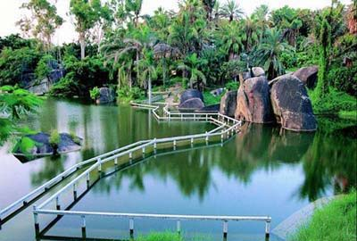
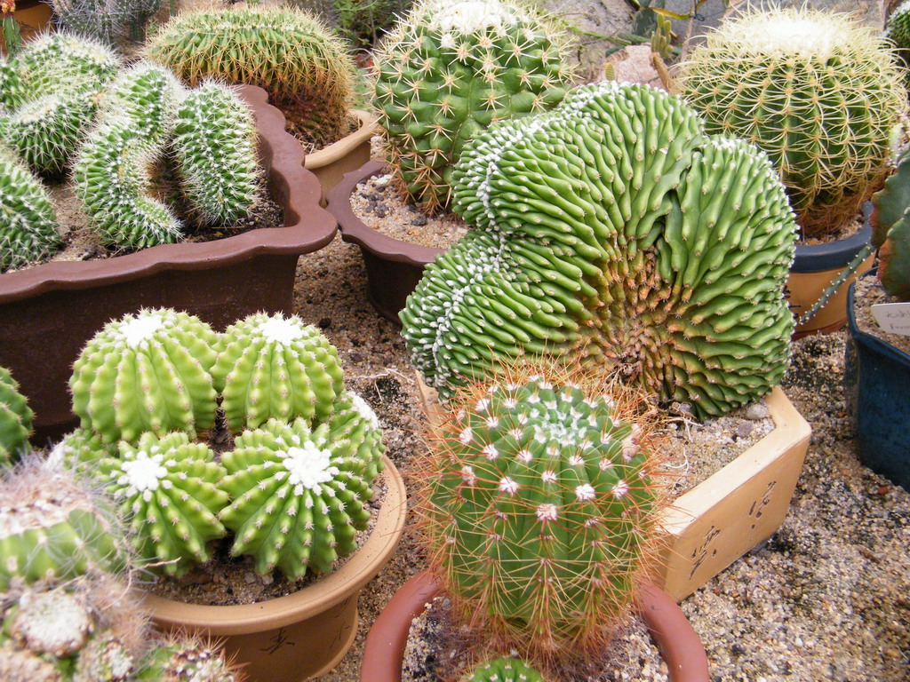
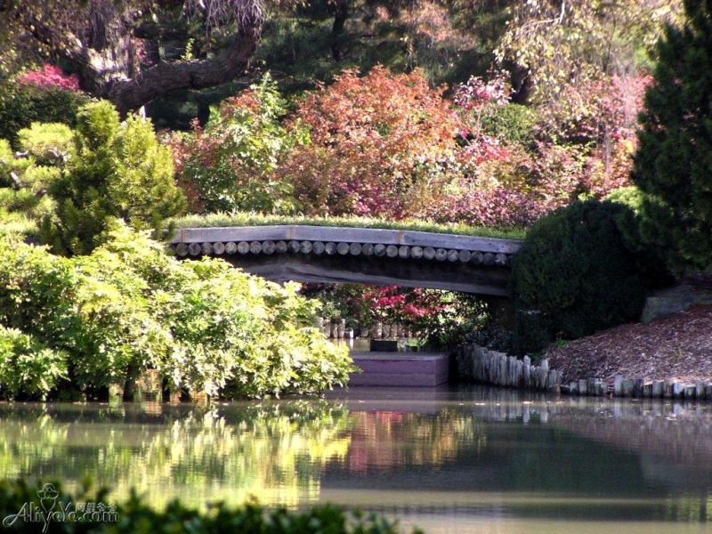
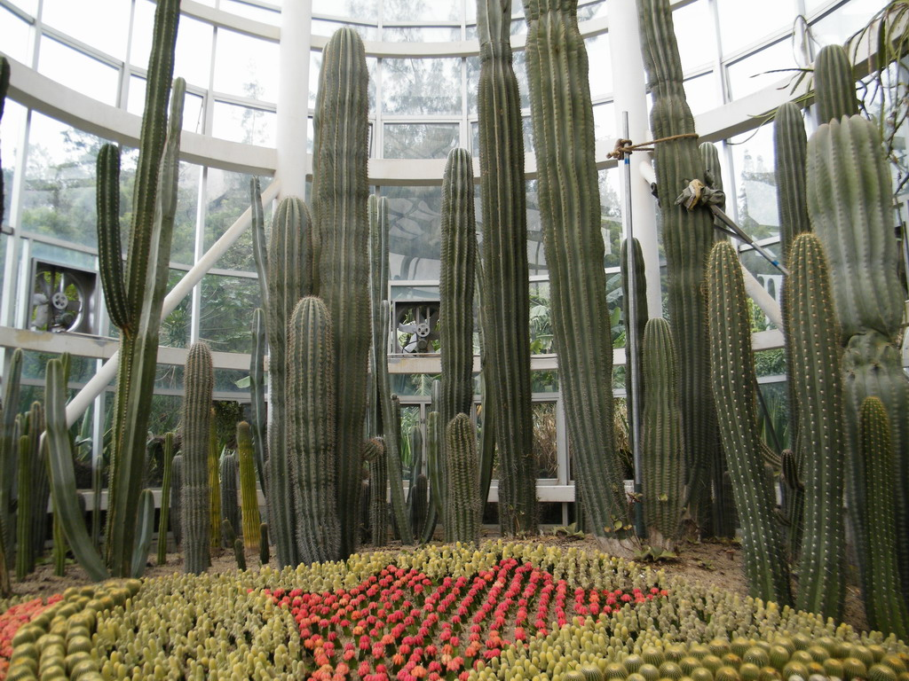

厦门市园林植物园位于厦门岛东南隅的万石山中，始建于1960年，是福建省第一个植物园，是鼓浪屿??万石山国家级重点风景名胜区的重要组成部分，占地4.93平方公里。作为厦门市开发较早的重点景区和浏览胜地之一。厦门旧有二十四景，在植物园范围内就有其中六景，即“万笏朝天”、“中岩玉笏”、“天界晓钟”、“太平石笑”、“紫云得路”、“高读琴洞”，涵盖山、洞、岩、寺诸景观，历代摩崖石刻众多，是风景名胜荟萃之地。新厦门二十名景中，本园内也有三景：万石含翠、天界晓钟、太平石笑从现存的摩崖石刻看，游览胜地的形成至少可追溯到明代万历年间，如天界醉仙岩“醴泉洞”三字为明代万历十一年（即1583）傅钺所刻，长啸洞东石壁留有万历戊申年（1608年）施德政等三位抗倭将领登高望远，情怀激荡，相互唱和的诗句，更有民族英雄郑成功屯兵厦门遗迹多处。至清代，岩寺、摩崖题刻更多，这充分表明此时不仅僧众修持礼佛，厦门名士和一般市民也来此登山踏青，游览胜境已十分普遍。作为风景名胜区的重要组成部分，多年来，厦门园林植物园从规划着手，倾力保护原有自然景观和人文景观，修复多条登山步游道，控制违章建筑，使旧有名景点、众多摩崖石刻得以基本保存完好。
作为引种驯化和园林建设示范基地，植物园充分发挥了应有作用。引种了速生树种南洋楹；为福建省首次引种成功并推广了优质高产的栲胶植物黑荆树；为我国首次引种香子兰，新西兰麻等观赏和经济植物，至今全园已引种、收集6300多种（含品种）植物，并已拥有相对优势的植物种类－－棕榈科植物、仙人掌科和多肉（多浆）植物、苏铁科植物和藤本植物等。根据规划，已建成裸子植物区、棕榈岛、蔷薇园、沙生植物区、雨林世界、花卉园、藤本区等特色专类园十多个，大大丰富了风景区景观。
厦门市园林植物园地处经济特区，紧邻市中心，交通便捷，区位环境优越，地处南亚热带海岛，夏无酷暑，冬不严寒，气候宜人，园内山峦起伏，无山不岩，奇岩趣石遍布，沟壑纵横，山岩景观独特，除众多摩崖石刻，另有省、市级文物保护单位多处，历史悠久，依托如此得天独厚的条件，建园以来，在大力荟集植物品种的同时，精心营造专类园，使新的人文景观与旧有景观交融，风景资源丰富和景观类型之多为国内其他植物园所罕见，已成为国内颇具特色、影响广泛的园林植物园。近十年来，年入园游客量均达百万人次以上，国家主要领导人及不少国外政界要人曾来园视察、游览，有的还在园内植树纪念。1984年，邓小平同志在南洋杉草坪内亲手植了一株大叶樟，为本园增辉不少。
 330445074@qq.com
330445074@qq.com 12345
12345